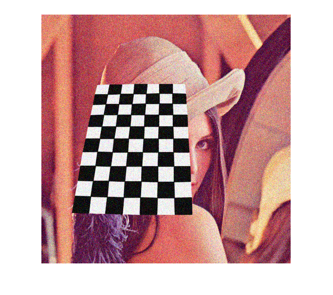
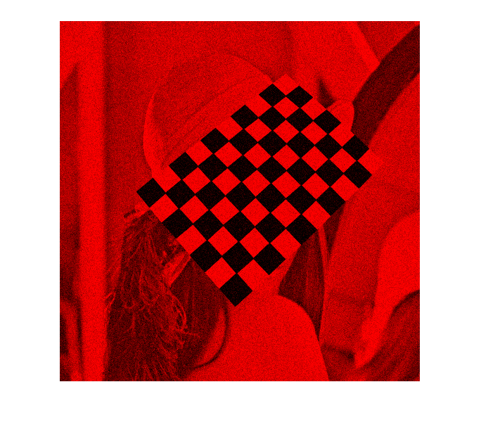

Creating a video with OpenCV
This demo shows how to write video files.
It explains:
- How to create a video file with OpenCV
- What type of video files you can create with OpenCV
- How to extract a given color channel from a video
As a simple demonstration we will just extract one of the BGR color channels of an input video file or webcam feed into a new video.
Sources:
Contents
Whenever you work with video feeds you may eventually want to save your image processing result in a form of a new video file. For simple video outputs you can use the OpenCV built-in cv.VideoWriter class, designed for this.
The structure of a video
For start, you should have an idea of just how a video file looks. Every video file in itself is a container. The type of the container is expressed in the files extension (for example avi, mov or mkv). This contains multiple elements like: video feeds, audio feeds or other tracks (like for example subtitles). How these feeds are stored is determined by the codec used for each one of them. In case of the audio tracks commonly used codecs are mp3 or aac. For the video files the list is somehow longer and includes names such as XVID, DIVX, H264 or LAGS (Lagarith Lossless Codec). The full list of codecs you may use on a system depends on just what one you have installed.

As you can see things can get really complicated with videos. However, OpenCV is mainly a computer vision library, not a video stream, codec and write one. Therefore, the developers tried to keep this part as simple as possible. Due to this OpenCV for video containers supports only the avi extension, its first version. A direct limitation of this is that you cannot save a video file larger than 2 GB. Furthermore you can only create and expand a single video track inside the container. No audio or other track editing support here. Nevertheless, any video codec present on your system might work. If you encounter some of these limitations you will need to look into more specialized video writing libraries such as FFMpeg or codecs as HuffYUV, CorePNG and LCL. As an alternative, create the video track with OpenCV and expand it with sound tracks or convert it to other formats by using video manipulation programs such as VirtualDub or AviSynth.
The cv.VideoWriter class
To create a video file you just need to create an instance of the cv.VideoWriter class. You can specify its properties either via parameters in the constructor or later on via the cv.VideoWriter.open function. Either way, the parameters are the same:
- The name of the output that contains the container type in its extension. At the moment only avi is supported.
- The size of the frames for the output video.
- The frame per second FPS for the output video.
- An optional Color argument. By default is true and says that the output will be a colorful one (so for write you will send three channel images). To create a gray scale video pass a false parameter here.
- The codec to use for the video track. Now all the video codecs have a unique short name of maximum four characters. Hence, the XVID, DIVX or H264 names. This is called a four character code. You may also ask this from an input video by querying its FourCC property. Four characters are four bytes, returned as a 32 bit integer. OpenCV internally works with this integer type and accept it in the FourCC option. It can also be specified as one of predefined strings. If you pass for this argument the value "minus one" then a window will pop up at runtime that contains all the codec installed on your system and ask you to select the one to use:

Afterwards, you can use the cv.VideoWriter.isOpened function to find out if the open operation succeeded or not. The video file automatically closes when the cv.VideoWriter object is destroyed. After you open the object with success you can send the frames of the video in a sequential order by using the cv.VideoWriter.write function of the class.
Code
open webcam
cap = createVideoCapture([], 'chess'); assert(cap.isOpened(), 'Could not initialize capturing'); frame = cap.read(); assert(~isempty(frame), 'Failed to read frame'); hImg = imshow(frame);
acquire input size
sz = [cap.get('FrameWidth'), cap.get('FrameHeight')]; %sz = [size(frame,2), size(frame,1)];
open the output video
fname = fullfile(tempdir(), 'output.avi'); vid = cv.VideoWriter(fname, sz, 'FourCC','MJPG', 'FPS',25, 'Color',true); assert(vid.isOpened(), 'Could not open output video');
select channel to save (extracting a color channel from an RGB image means setings the values of the other channels to zero)
ch = 1; % 1=red, 2=green, 3=blue if true idx = setdiff(1:3, ch); else idx = (1:3) ~= ch; end
main loop, reading frames from webcam and saving to video file (we only record a limited number of frames in this demo)
counter = 0; while counter < 25 && ishghandle(hImg) % read next frame counter = counter + 1; frame = cap.read(); if isempty(frame), break; end % extract only the specified channel frame(:,:,idx) = 0; % write to output video vid.write(frame); % show processed frame set(hImg, 'CData',frame); drawnow; end
close webcam feed and output video
cap.release(); vid.release();
open video file in system media player
disp(['Video saved in: ' fname]) if ispc() && ~mexopencv.isOctave() %HACK: WINOPEN not implemented in Octave winopen(fname); end
Video saved in: C:\Users\Amro\AppData\Local\Temp\output.avi